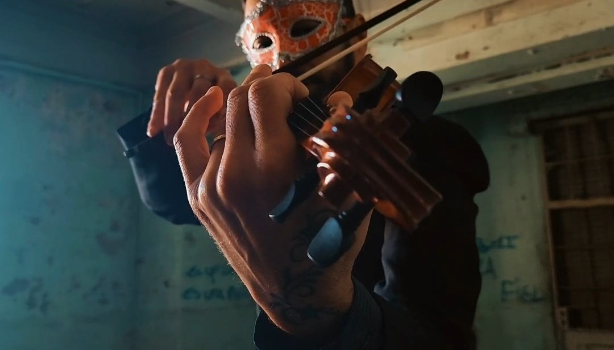

Pablo Balestri
(voz y bajo)
Cantante, músico, compositor. Estudió guitarra, canto, viola, y bajo. Ha tenido numerosos maestros de canto, algunos de ellos pertenecientes al Teatro Colón, o al instituto del Teatro Colón. Ex-integrante en el Coro Estable de los Organismos Artísticos del Sur. Nació en la ciudad de Bahía Blanca, dió sus primeros pasos de técnica vocal en su ciudad natal para luego perfeccionarse con los maestros Lucía Boero (profesora del instituto superior de arte del teatro Colón, Enrique Gibert Mella (Barítono del coro estable Teatro Colón) entre otros.
Desde el año 2008 a la actualidad, junto a su esposa Valeria Mangano, (Mezzo-soprano) decidieron perfeccionar la técnica vocal de manera autodidacta, bajo la supervisión del maestro de repertorio de Ópera, César Tello (egresado del instituto superior de arte del Teatro Colón, director del coro estable de Bahía Blanca y de la Ópera de cámara de la UNS entre otras instituciones).
Formó parte del coro estable provincial de la orquesta sinfónica de Bahía Blanca desde el año 2004 hasta 2007, bajo la dirección de Danilo Grimoldi.
En el año 2007 junto a su esposa Valeria Mangano, editaron un cd titulado “El destino que soñé” en el género de opera-pop, que contiene covers y también temas de propia autoría. Con este dúo nombrado “Incanto” han recorrido el país difundiendo el género pop-lírico con muy buenas repercusiones.
En el año 2012, participó como solista en los roles de las Óperas: Cosí Fan Tutte de Mozart (Ferrando), Barbero de Sevilla de Rossini (Conde de Almaviva) Dreigroschenoper de Kurtz Weill (Mackie navaja)
En el año 2013, realizó como Solista las Óperas: Cenerentola, de Rossini (príncipe Ramiro), Anna Bolena de Donizetti (Ricardo Percy)